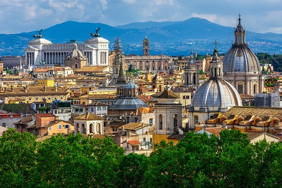

Grande ville cosmopolite, Rome dispose de tout pour séduire et captiver ses visiteurs. Que vous soyez passionné d’art, amateur d’histoire ou gourmand, vous serez satisfait de votre visite. Malgré un passé mouvementé, elle a su conserver son charme et mérite bien son surnom de « ville éternelle ». Grâce à ses nombreux atouts touristiques, la ville est considérée comme un véritable centre d’influence. Elle abrite en effet le siège de la religion catholique et attire également un grand nombre d’artistes et de créateurs de mode. Ces derniers s’inspirent souvent des chefs-d’œuvre de Raphaël et de Michel-Ange pour réaliser leurs propres créations.
Depuis ses origines, et encore aujourd’hui, Rome est le cœur de la Dolce Vita et en même temps la fondation du monde tel que nous le voyons de nos jours. À chaque coin de rue, vous trouverez forcément quelque chose de différent et de surprenant. Véritable musée en plein air, Rome s’impose comme une destination idéale pour un séjour en solo, en famille ou entre amis. Découvrez dans la suite de cet article des raisons valables de visiter cette ville au moins une fois de votre vie.
La plus belle ville du monde
Peu de villes peuvent envisager le titre de plus belle ville du monde mais Rome est définitivement une prétendante sérieuse !
L’actuelle capitale italienne fut le centre d’un des plus grands empires de l’histoire antique et les témoignages de ce glorieux passé sont encore bien visibles dans la ville. Rome fut ensuite une des grandes cités de la Renaissance et là encore, on peut admirer dans son centre-ville les bâtiments et les couleurs de l’époque.
Un paysage qui se contemple depuis la coupole de la Basilique St Pierre, depuis le mirador de la Villa Borghese, ou depuis l’un des nombreux points de vue de la ville, et qui permet de se rendre compte que prétendre que Rome est la plus belle ville du monde n’est pas exagéré.

Monuments Romains
La richesse de Rome se traduit par un nombre de monuments à visiter affolant ! Il y a les immanquables que je recense dans ce top 10, et qui vous offrent un véritable voyage dans le temps.
Et durant un séjour dans la capitale italienne, vous tomberez sur des statues, des vestiges ou des palais disséminés dans les différents quartiers, qui vous feront prendre conscience qu’en plus du symbolique Colisée ou de l’emblématique Fontaine de Trevi, la ville éternelle a énormément à offrir à ses visiteurs !
Pour son ambiance unique
Parmi les bonnes raisons de visiter Rome, il y a son ambiance unique ! Demandez à un italien qui n’est pas de Rome ce qu’il pense de la capitale et de ses habitants et vous verrez que vous obtiendrez tout un tas de réponses variées !
Certains trouvent la ville chaotique et les romains bruyants, d’autres adorent le style romantique de la capitale et l’attitude désinvolte de ses habitants, et vous n’aurez qu’à vous promener dans les rues pour vous faire votre propre avis.
Quoi qu’il en soit, Rome ne vous laissera jamais indifférent !
Decouvrir la gastronomie Romaine
Venir en Italie pour manger justifierait n’importe quel voyage dans la botte tant la gastronomie du pays surpasse celles de ses voisins à bien des égards : dans la variété, dans les spécialités régionales et l’usage de produits frais et en terme de saveurs.
A Rome, les spécialités culinaires sont nombreuses et je vous invite à gouter autant de plats que possible durant votre séjour !
Les menus vous mettront l’eau à la bouche à coup sûr mais si vous ne savez pas quoi choisir, optez pour les Saltimbocca alla romana, les pates Cacio et pepe, les Bucatini all’amatriciana et le panino alla Porchetta Romana. Vous ne le regretterez pas… !
Pour l'art omnipresent
L’art est partout à Rome, dans les rues, mais également dans les musées de la ville, nombreux et fort intéressants.
On trouve d’impressionnantes collections dans les musées du Vatican, bien évidemment, mais également au sein de la Galerie Borghese ou dans le musée du colossal monument Victor Emmanuel II.
Voir le Vatican
Durant votre séjour à Rome, vous ne manquerez pas d’activités et l’une d’elle sera la visite du Vatican.
Ce micro-état enclavé dans la ville de Rome est le siège de la chrétienté et chaque année, des millions de visiteurs s’y pressent pour admirer la Basilique St Pierre ou la très célèbre Chapelle Sixtine avec ses plafonds peints par Michelangelo.
Les trésors que vous verrez en ces lieux vous marqueront à jamais et il s’agit d’une bonne raison de plus de visiter Rome !
A ce titre, je vous livre quelques conseils pour optimiser votre passage au Vatican et ne rien manquer !
.jpg)